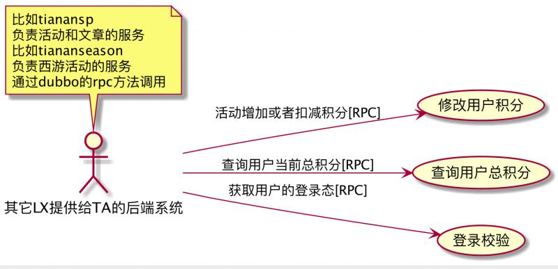
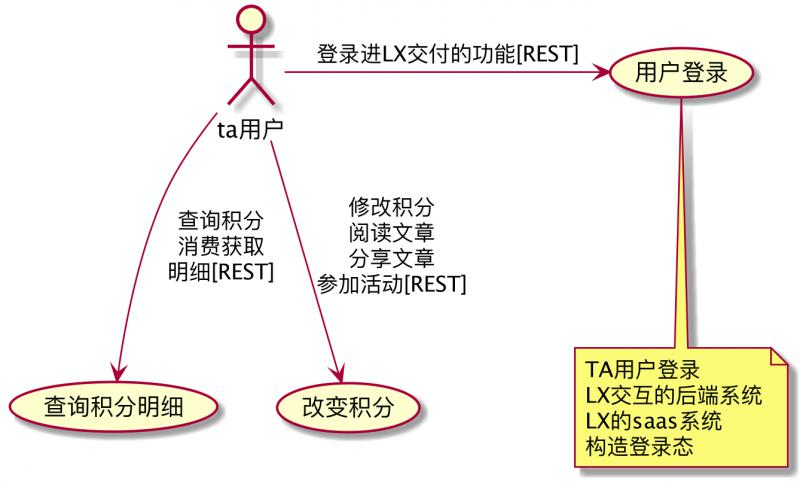
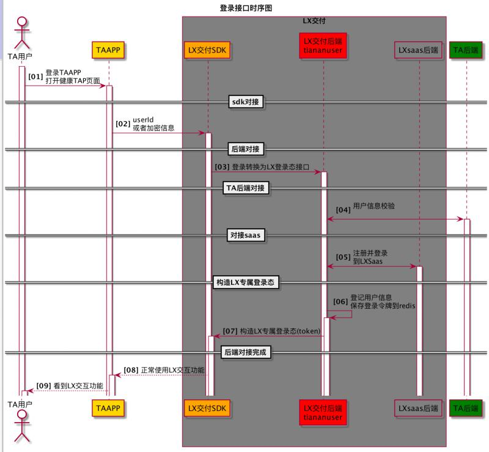
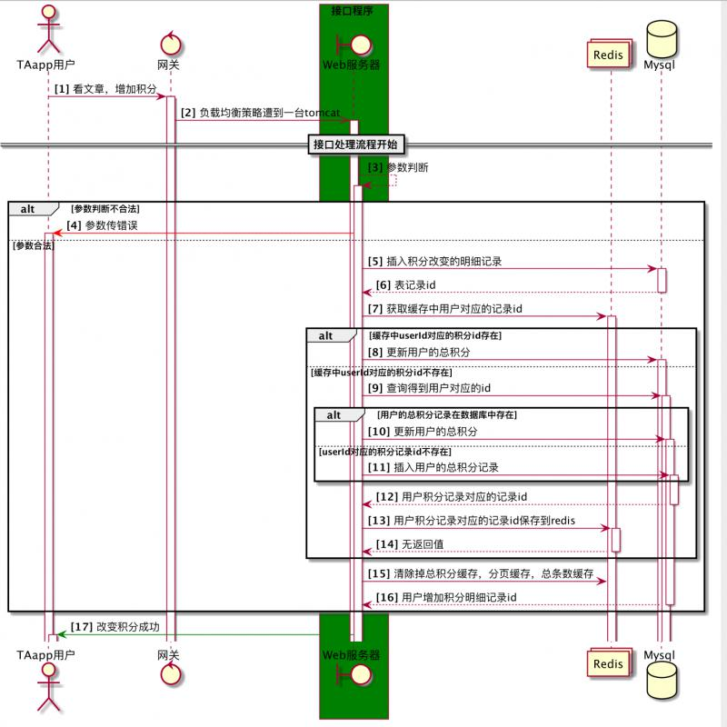
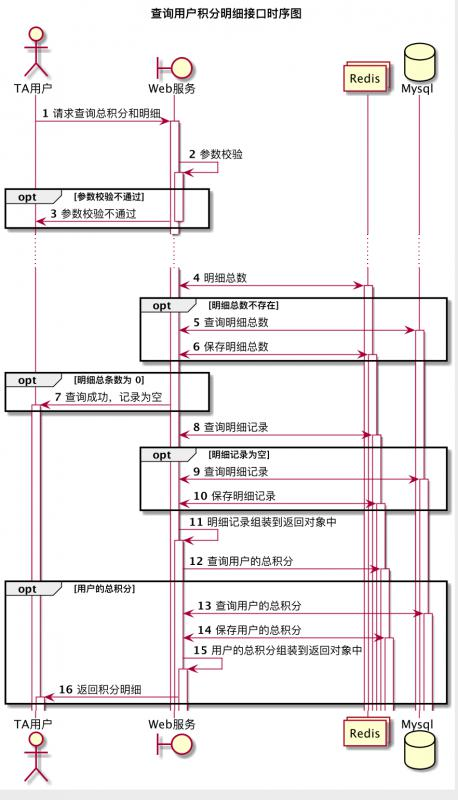

当下的软件开发人员，不可避免的需要输出一些软件设计文档，作为一个软件工程专业毕业的工程师，最常用的设计工具就是UML，使用UML工具绘制一些软件相关的图，是必备技能，也是输出的技术文档中的重要组成部分。不关注逆向工程，这里只关注快速的绘制对应的图，plantuml是一款比较不错的工具。本节先初步熟悉用例图和时序图。
功能介绍：
支持快速绘制
还支持非UML图：
以及不常用的的图：
画完图之后，可以生成PNG,SVG,Latex格式的图片;
x项目的用户后端服务,包括用户登录，用户积分模块；
用户角度描述系统功能
| 基本对象 | 语法 | 说明 |
|---|---|---|
| 用例 | usecase 详细名称 as 简称 | 定义一个用例 |
| 用例带自描述 | usecase 详细名称 as “详细描述可分行” | 定义一个用例并详细描述 |
| 角色 | actor :角色全称: as 角色简称 | 定义一个角色 |
| 角色和用例建立联系并设置关系 | 角色简称-->usercase简称:关系名称 | 建立角色和用例的关系 |
| 继承 | 角色<竖线--角色 或者 用例<竖线用例 | 描述角色跟角色之间的继承关系或者用例跟用例之间的继承关系 |
| 单行注释 | note 位置 of 用例或者角色简称 : 注释内容 | 增加单行注释 |
| 多行注释 | note 位置 of 用例或者角色简称 换行 注释内容 换行 end note | 添加多行注释 |
| 构造类型 | 《父类》 | 定义角色或者用例的构造类型，即父类 |
| 简单箭头 | ->水平， -->垂直线,箭头也可以改变方向或者是双向的 | 不用指明方向的箭头 |
| 方位箭头 | -位置-> | 带位置的箭头， 位置是 right left down up 上下左右 |
| 分割图 | newpage | 把一页分成两页 |
| 定义默认方向 | left to right direction | 设置默认方向 |
@startuml
left to right direction
actor : 其它LX提供给TA的后端系统: as otherLxTaBackendService
note top of otherLxTaBackendService
比如tianansp
负责活动和文章的服务
比如tiananseason
负责西游活动的服务
通过dubbo的rpc方法调用
end note
usecase 修改用户积分 as changeUserPoint
usecase 查询用户总积分 as getUserTotalPoint
usecase 登录校验 as getRestContextByAccessToken
otherLxTaBackendService --> getRestContextByAccessToken:获取用户的登录态[RPC]
otherLxTaBackendService --> changeUserPoint:活动增加或者扣减积分[RPC]
otherLxTaBackendService --> getUserTotalPoint: 查询用户当前总积分[RPC]
@enduml生成的图：

@startuml
'left to right default
actor : ta用户: as taUser
usecase 用户登录 as userLogin
usecase 查询积分明细 as findUserPointDetail
usecase 改变积分 as changeUserPointDetail
note bottom of userLogin
TA用户登录
LX交互的后端系统
LX的saas系统
构造登录态
end note
taUser -right-> userLogin: 登录进LX交付的功能[REST]
taUser --> changeUserPointDetail : 修改积分\n阅读文章\n分享文章\n参加活动[REST]
taUser --> findUserPointDetail : 查询积分\n消费获取\n明细[REST]
@enduml
展示对象跟对象之间的协作关系
| 对象 | 语法 | 说明 |
|---|---|---|
| 箭头和线 | -> <-实线箭头 <-- -->虚线箭头 | 标识参与者之间的消息传递 |
| 参与者 | actor 角色 boundary 带边界 control控制 entity 实体 database 数据库 collections 集合 participant 参与者 | 标识参与者 |
| 重命名 | participant 参与者详细名称 as 简称 | 重命名参与者 |
| 定义顺序 | participant 参与者详细名称 order 排序号 | 序号越小越靠前 |
| 参与者含有特殊字符 | “参与者” | 双引号包围 |
| 箭头样式 | 丢失的消息 ->x 实心箭头 -> 虚箭头 ->> 半实心箭头 - 半虚箭头 -\ 箭头末尾加0 ->o | 各种箭头 |
| 箭头颜色 | 参与者1-[颜色定义]->参与者 | 改变箭头颜色 |
| 消息自动编号 | autonumber | 放在开始的位置 |
| 设置 | title,header,footer | header footer title在开始的地方定义 |
| 组合消息条件分支 | alt/else end | 条件分支 |
| 组合消息循环分支分支 | loop end | 循环 |
| 组合消息 group | group end | 分组 |
| 单行注释 | note 位置 ：注释内容 | 给消息增加备注 |
| 多行注释 | note 位置（right,left,over） 换行 注释内容 换行 end note | 给消息增加备注 |
| 改变注释的形状 | hnote 六边形 rnote 四边形 | 注释的形状 |
| 分隔符 | ==分割备注内容== | 横向划分模块 |
| 引用 | ref over 参与者1 参与者2 : 引用内容 | 引用 |
| 延迟 | ···标识延迟 ··· | 消息固定延迟 |
| 空间 | 3根竖线 | 间隔 |
| 激活生命线 | activate 参与者 | 激活生命线 |
| 取消激活生命线 | deactivate 参与者 | 激活生命线 |
| 返回 | return 参与者 | 返回 |
| 创建参与者 | create 参与者 | 标识创建对象 |
| 快捷键 | ++ 激活参与者 --取消激活参与者 ** 创建参与者 ！！销毁参与者 | 见语法说明 |
| 创建盒子 | box "box的命名" #背景色 换行 参与者1 参与者2 end box | 纵向划分模块 |
@startuml
autonumber "<b>[00]"
title 登录接口时序图
actor "TA用户" as User #white
participant "TAAPP" as TAAPP #gold
box "LX交付" #gray
participant "LX交付SDK" as LXSDK #orange
participant "LX交付后端\ntiananuser" as LXServer #red
participant "LXsaas后端" as LXSaasServer #gray
end box
participant "TA后端" as TAServer #green
activate User
User -> TAAPP ++: 登录TAAPP\n打开健康TAP页面
==sdk对接==
TAAPP -> LXSDK ++: userId\n或者加密信息
==后端对接==
LXSDK -> LXServer ++: 登录转换为LX登录态接口
==TA后端对接==
LXServer <-> TAServer ++: 用户信息校验\n
==对接saas==
LXServer <-> LXSaasServer ++: 注册并登录\n到LXSaas
==构造LX专属登录态==
LXServer -> LXServer ++: 登记用户信息\n保存登录令牌到redis
LXServer -> LXSDK ++: 构造LX专属登录态(token)
==后端对接完成==
LXSDK --> TAAPP ++: 正常使用LX交互功能
TAAPP --> User ++: 看到LX交互功能
@enduml
@startuml
autonumber "<b>[#]"
actor TAapp用户 as taUser
control 网关 as nginx
box 接口程序 #green
boundary Web服务器 as tomcat
end box
collections Redis as redis
database Mysql as mysql
taUser -> nginx ++ : 看文章，增加积分
nginx ->> tomcat ++ : 负载均衡策略遭到一台tomcat
==接口处理流程开始==
tomcat --> tomcat ++ : 参数判断
alt 参数判断不合法
tomcat -[#red]> taUser ++ : 参数传错误
else 参数合法
tomcat -> mysql ++ : 插入积分改变的明细记录
return 表记录id
tomcat ->redis ++ : 获取缓存中用户对应的记录id
alt 缓存中userId对应的积分id存在
tomcat -> mysql ++ : 更新用户的总积分
else 缓存中userId对应的积分id不存在
tomcat -> mysql ++ : 查询得到用户对应的id
alt 用户的总积分记录在数据库中存在
tomcat -> mysql ++ :更新用户的总积分
else userId对应的积分记录id不存在
tomcat -> mysql ++ :插入用户的总积分记录
end
return 用户积分记录对应的记录id
tomcat -> redis ++: 用户积分记录对应的记录id保存到redis
return 无返回值
end
tomcat ->redis: 清除掉总积分缓存，分页缓存，总条数缓存
return 用户增加积分明细记录id
end
tomcat -[#green]> taUser ++ : 改变积分成功
@enduml
@startuml
title 查询用户积分明细接口时序图
autonumber
actor TA用户 as taUser
boundary Web服务 as tomcat
collections Redis as redis
database Mysql as mysql
taUser -> tomcat ++ : 请求查询总积分和明细
|||
tomcat -> tomcat ++: 参数校验
opt 参数校验不通过
tomcat -> taUser --: 参数校验不通过
end
... ...
tomcat <-> redis ++: 明细总数
opt 明细总数不存在
tomcat <-> mysql ++: 查询明细总数
tomcat <-> redis ++: 保存明细总数
end
opt 明细总条数为 0
tomcat -> taUser ++: 查询成功，记录为空
end
tomcat <-> redis ++: 查询明细记录
opt 明细记录为空
tomcat <-> mysql ++: 查询明细记录
tomcat <-> redis ++: 保存明细记录
end
tomcat -> tomcat ++: 明细记录组装到返回对象中
tomcat -> redis ++: 查询用户的总积分
opt 用户的总积分
tomcat <-> mysql ++: 查询用户的总积分
tomcat <-> redis ++: 保存用户的总积分
tomcat -> tomcat ++: 用户的总积分组装到返回对象中
tomcat -> taUser ++: 返回积分明细
end
@enduml
- plantuml可以绘制很多软件设计文档中的图，包括架构图，ER图，UML图；
- 用例图宏观的描述了系统的功能；
- 时序图比较细致的描述了单个接口的内部处理流程；
- 接受老项目的时候，按照UML图去一个一个画出来，可以尽快的hold老系统
原创不易，转载请注明出处。